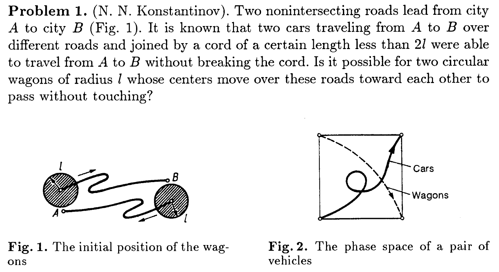

Differential Equations
The results of mathematics are seldom directly applied; it is the definitions that are really useful. Once you learn the concept of a differential equation, you see differential equations all over, no matter what you do. This you cannot see unless you take a course in abstract differential equations. What applies is the cultural background you get from a course in differential equations, not the specific theorems. If you want to learn French, you have to live the life of France, not just memorize thousands of words. If you want to apply mathematics, you have to live the life of differential equations. When you live this life, you can then go back to molecular biology with a new set of eyes that will see things you could not otherwise see.
That's because first-order objects (things) are simpler and therefore easier to use than second-order objects (relations between things). E.g. it's easier to use a hammer than to apply Maslow's Law of the Instrument.
Maslow's Hammer Law. If all you have is a hammer, everything looks like a nail.
Phase Space
Note. These are either very neighbourly roads or very large wagons:
No. Reminds me of another puzzle where you walk up a mountain at dawn one day, and the next day also at dawn you walk down. Question is whether at some point on the second day you'll be at the same place at the same time as on the first day. Answer is Yes.
Model of a falling object
Example. By Newton's second law, $$F = ma = m \frac{dv}{dt} = mg - \g v,$$ where $\g v$ is an approximation of the force due to air drag.
Simple model of population growth
Example. Let $p$ be a mice population, $r$ be the constant growth rate, and $d$ be the constant number of deaths due to owls per unit time (e.g. month): $$\dot p = rp - d.$$
Reference
- Elementary Differential Equations and Boundary Value Problems by Boyce and DiPrima.
- Ordinary Differential Equations by Arnol'd.
- Everything else from the web.